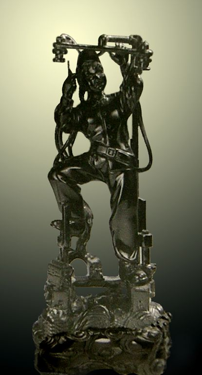
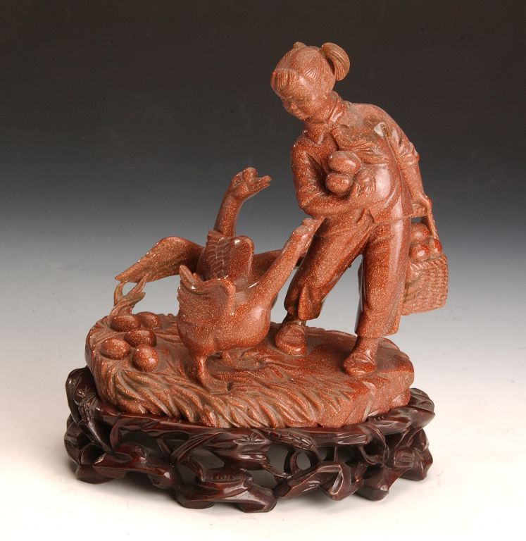
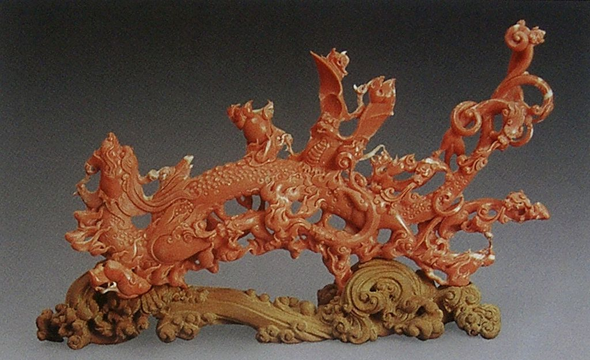
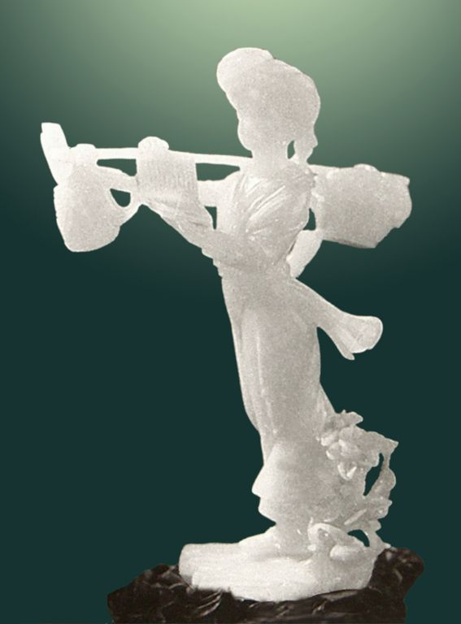

历代玉器记刻着时代的变迁。然而，现代玉器同样以她特有的形式美感透射出时代的气息，我们通过欣赏大师、名家优秀的玉器作品，去感受当今玉器特有的温润美，技巧美和创意美。 现代玉器从1949年新中国建立以后，发展至今已有半个多世纪，其间也有潮起潮落。而今，随着经济的繁荣发展，人们的精神文化需求高涨，赏玉、藏玉者日益增多，好玉之风日益盛行，为玉器的琢磨、发展提供了一个良好的经济基础和文化氛围。 在20世纪50年代至70年代末，老一辈琢玉艺术家为中国玉器事业的复兴和发展做出了卓越的贡献，在机器设备上，不断改进；在玉器品种上，俱全门类；在用料设计上，完善了传统的用料设计法则，并树立精心创造的创作思想，同时留下了许多优秀的玉器作品，为现代玉雕的发展淀结了丰厚的底蕴。 在好玉之风盛行的今天，孕育着一大批大师、名家和琢玉高手，他们在与玉的交流过程中渐渐对玉产生了感悟，琢玉有了新气息、新思路、新款式，并将传统的玉文化融入现代的生活，又将现代的审美意识渗透到琢玉的创意之中，从而将“新玉”去润养现代人的心灵，去延续玉的文脉。  白玉 四喜炉 设计：刘纪松 制作：沈建平 宋鸣放 白玉 四喜炉 设计：刘纪松 制作：沈建平 宋鸣放 独山玉 玉兰双鸟 上海玉雕厂 独山玉 玉兰双鸟 上海玉雕厂 翡翠 飞熊杯 设计：刘纪松 制作：冯根龙 李荣伟 翡翠 飞熊杯 设计：刘纪松 制作：冯根龙 李荣伟 翡翠 菊花瓶 设计：朱其法 制作：张建平 翡翠 菊花瓶 设计：朱其法 制作：张建平 翡翠 链条瓶 上海玉雕厂 翡翠 链条瓶 上海玉雕厂 翡翠 熏炉 设计：王玉 制作：韩广彬 翡翠 熏炉 设计：王玉 制作：韩广彬 翡翠三秋瓶 王仲元（1959年 北京玉器厂） 翡翠三秋瓶 王仲元（1959年 北京玉器厂） 芙蓉石 牡丹花瓶 上海玉雕厂 芙蓉石 牡丹花瓶 上海玉雕厂 河蟹 河蟹黑密玉 弧光闪闪 陈时毅
 黄玉 双羊尊 设计：刘纪松 制作：蒋灿林 周锦 方国全 黄玉 双羊尊 设计：刘纪松 制作：蒋灿林 周锦 方国全 金星 观音菩萨 张雷 金星 观音菩萨 张雷 金星 人欢鱼跃 王惠民 金星 人欢鱼跃 王惠民金星 装不下 张雷
 近代 白玉白菜 近代 白玉白菜近代 珊瑚雕龙生九子摆件
 近代 糖白玉俏色放风筝仕女 近代 糖白玉俏色放风筝仕女 玛瑙 龙盘 设计： 王仲元 制作：修德功 玛瑙 龙盘 设计： 王仲元 制作：修德功 玛瑙 醉罗汉 王敏 玛瑙 醉罗汉 王敏 玛瑙雏鸡 潘淑艾（20世纪60年代 北京玉器厂） 玛瑙雏鸡 潘淑艾（20世纪60年代 北京玉器厂） 玛瑙五鹅 设计王树森 制作：黄宝瑞 玛瑙五鹅 设计王树森 制作：黄宝瑞密玉 赶集 夏惠微
 民初 翠玉瓶 民初 翠玉瓶 民国 青白玉仿痕都斯坦工双耳四足炉 民国 青白玉仿痕都斯坦工双耳四足炉 民国 青玉雕竹节提梁壶 民国 青玉雕竹节提梁壶 民国 民国 俏色翡翠 扁豆瓶 上海玉雕厂 俏色翡翠 扁豆瓶 上海玉雕厂 珊瑚 牡丹菊花瓶 上海玉雕厂 珊瑚 牡丹菊花瓶 上海玉雕厂 珊瑚 扑蝶 设计：郑一辉 制作：郑一辉 魏忠仁 珊瑚 扑蝶 设计：郑一辉 制作：郑一辉 魏忠仁 水胆玛瑙群山飞瀑 水胆玛瑙群山飞瀑  四喜炉 设计：刘纪松 制作：沈建平 宋鸣放 四喜炉 设计：刘纪松 制作：沈建平 宋鸣放 图3-2 翡翠 扁豆瓶 图3-2 翡翠 扁豆瓶 我要使劲地长 孙正社 我要使劲地长 孙正社 现代 翡翠 喜结佳偶 周兴国 现代 翡翠 喜结佳偶 周兴国 现代 翡翠三足狮子大炉 宋鸣放 现代 翡翠三足狮子大炉 宋鸣放 现代 玛瑙佛手 现代 玛瑙佛手  新玉 嫦娥舒广袖 设计：肖海春 王恒书 制作：王恒书 韦恩福 新玉 嫦娥舒广袖 设计：肖海春 王恒书 制作：王恒书 韦恩福 新玉 精卫填海 设计：肖海春 制作：郝金才 李珠宝 新玉 精卫填海 设计：肖海春 制作：郝金才 李珠宝 岫岩玉 南海明珠 设计：朱宁方 黄 肖海春 制作：黄忄隽 岫岩玉 南海明珠 设计：朱宁方 黄 肖海春 制作：黄忄隽 岫岩玉 网网丰收 上海玉雕厂 岫岩玉 网网丰收 上海玉雕厂 岫玉 出击 王敏 岫玉 出击 王敏 紫花翡翠 万紫千红 链条瓶 上海玉雕厂 紫花翡翠 万紫千红 链条瓶 上海玉雕厂 |
| 珠宝设计网站 中国珠宝设计网 国际珠宝网 傲宝网 BACCARAT |
雕塑设计网站 中国雕塑网 |
玉器图库 一些挂件 一些手把件 一些摆件 |
玉器设计与雕刻大赛 上海玉器雕刻神功奖 上海玉器雕刻玉龙奖 北京玉器雕刻天工奖 |
玉器设计与工艺发展动态 玉器设计与工艺过去 玉器设计与工艺现在 玉器设计与工艺未来 |